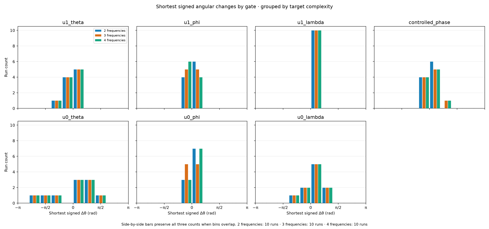
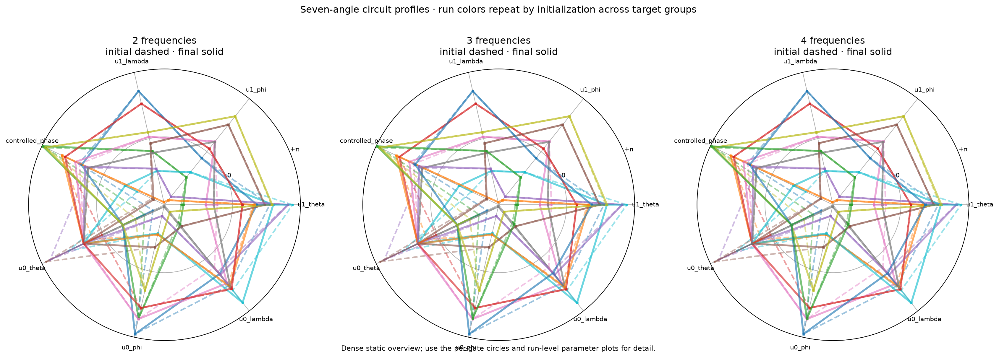
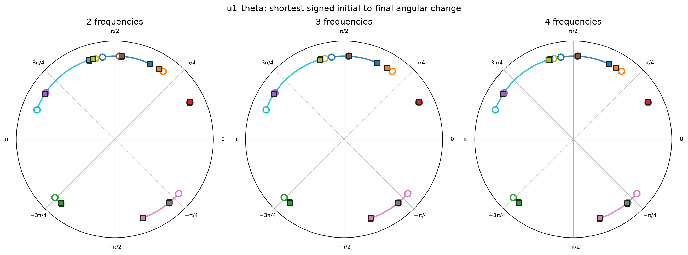
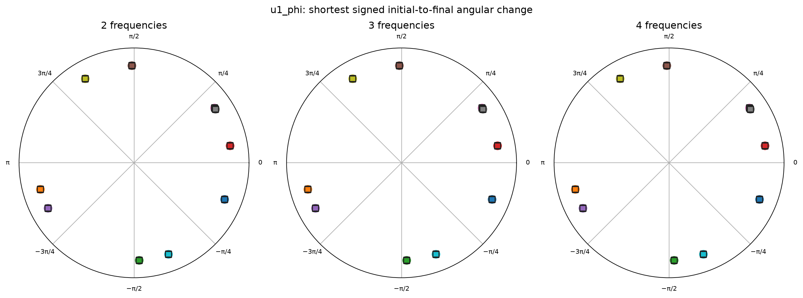
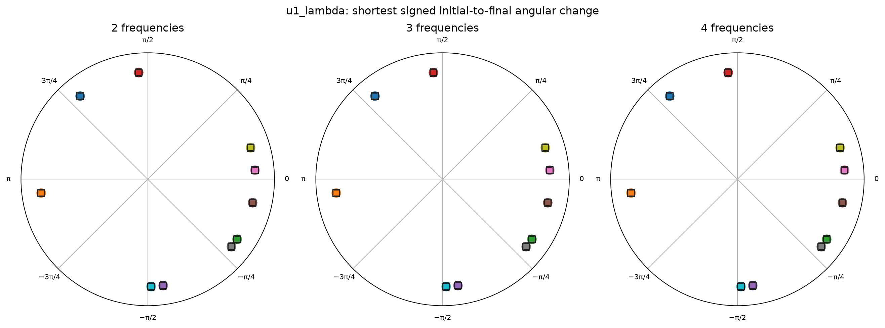
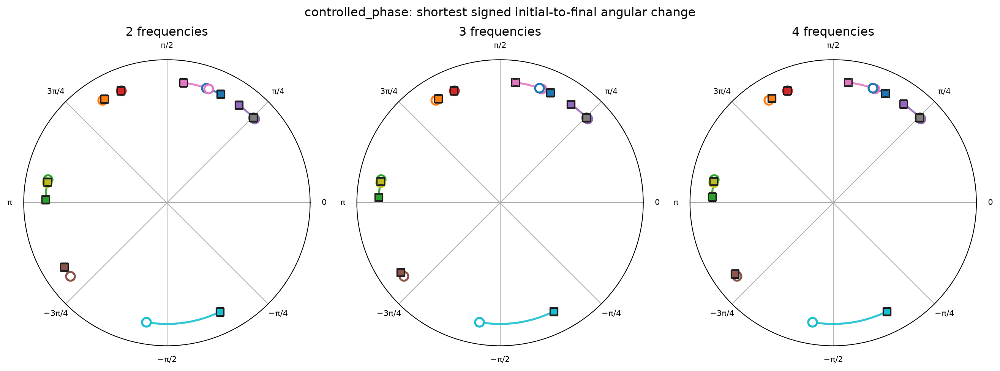
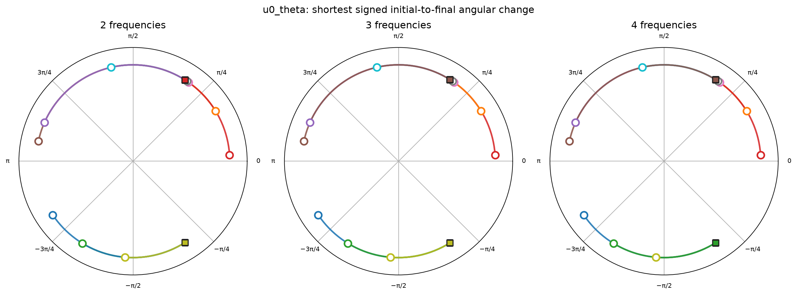
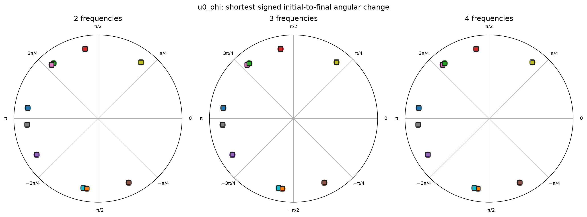
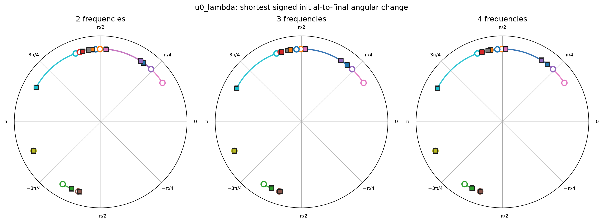

Nested targets have 2, 3, or 4 distinct non-DC frequencies (k=1..N), with a zero y-intercept. Every added target retains the same coefficients for existing components. MSE is the training objective; process fidelity is diagnostic only.
Data volume per run: 64 train + 128 validation + 512 test points. Shared data seed 314159 keeps x samples paired across target complexities. Ten initialization trials per target; 30 runs total.
| Components | Target (k, cosine, sine) | Test MSE mean ± SD | Dominant k=1 accuracy | Support precision | Support recall | QFT process fidelity mean ± SD |
|---|---|---|---|---|---|---|
| 2 | [[1, 0.55, 0.25], [2, 0.16, 0.08]] | 0.0162719 ± 5.7e-11 | 100% | 1.00 | 0.50 | 0.0883 ± 0.16 |
| 3 | [[1, 0.55, 0.25], [2, 0.16, 0.08], [3, 0.1, 0.05]] | 0.0224609 ± 1.4e-10 | 100% | 1.00 | 0.33 | 0.0900 ± 0.16 |
| 4 | [[1, 0.55, 0.25], [2, 0.16, 0.08], [3, 0.1, 0.05], [4, 0.07, 0.035]] | 0.0265969 ± 1.1e-10 | 100% | 1.00 | 0.25 | 0.0890 ± 0.16 |
Each histogram uses the shortest signed angular change modulo 2π. Side-by-side bars retain blue (2), orange (3), and green (4 frequency) counts even when they fall in the same bin. Side-by-side bars retain blue (2), orange (3), and green (4 frequency) counts even when they fall in the same bin. Side-by-side bars retain blue (2), orange (3), and green (4 frequency) counts even when they fall in the same bin. Side-by-side bars retain blue (2), orange (3), and green (4 frequency) counts even when they fall in the same bin.

Each spoke is one angle; radius maps the wrapped position from −π at center to +π at the outer circle. Each run uses one color: initial polygon dashed with circle markers, final polygon solid with square markers. Thin radial connectors join each gate's initial and final positions. Colors are distinct within each frequency-count group and reused across groups by initialization seed. Colors are distinct within each frequency-count group and reused across groups by initialization seed. Colors are distinct within each frequency-count group and reused across groups by initialization seed.

Each colored arc connects the initial angle marker (hollow circle) to the final marker (filled square) along the shortest circular path. All connectors are drawn first, then all markers are drawn above them with contrasting outlines. An unchanged angle has overlapping endpoints and no visible arc. Colors are distinct among runs within each frequency-count panel and reused across panels by initialization seed; run IDs and hex colors are in summary.json and metrics.csv.







| Featured | Components | Data seed | Init seed | Train points | Test MSE | Target support | Learned support | Support recall | QFT fidelity | Run |
|---|---|---|---|---|---|---|---|---|---|---|
| Lowest MSE | 2 | 314159 | 44 | 64 | 0.01627189 | [1, 2] | [1] | 0.50 | 0.05755 | report |
| Highest MSE | 4 | 314159 | 44 | 64 | 0.02659686 | [1, 2, 3, 4] | [1] | 0.25 | 0.057405 | report |
| 2 | 314159 | 51 | 64 | 0.01627189 | [1, 2] | [1] | 0.50 | 0.069527 | report | |
| 2 | 314159 | 42 | 64 | 0.01627189 | [1, 2] | [1] | 0.50 | 0.53254 | report | |
| 2 | 314159 | 48 | 64 | 0.01627189 | [1, 2] | [1] | 0.50 | 0.014672 | report | |
| 2 | 314159 | 43 | 64 | 0.01627189 | [1, 2] | [1] | 0.50 | 0.016086 | report | |
| 2 | 314159 | 47 | 64 | 0.01627189 | [1, 2] | [1] | 0.50 | 0.0016579 | report | |
| 2 | 314159 | 46 | 64 | 0.01627189 | [1, 2] | [1] | 0.50 | 0.0037065 | report | |
| 2 | 314159 | 49 | 64 | 0.01627189 | [1, 2] | [1] | 0.50 | 0.0013345 | report | |
| 2 | 314159 | 45 | 64 | 0.01627189 | [1, 2] | [1] | 0.50 | 0.18478 | report | |
| 2 | 314159 | 50 | 64 | 0.01627189 | [1, 2] | [1] | 0.50 | 0.00082389 | report | |
| 3 | 314159 | 48 | 64 | 0.02246088 | [1, 2, 3] | [1] | 0.33 | 0.01494 | report | |
| 3 | 314159 | 49 | 64 | 0.02246088 | [1, 2, 3] | [1] | 0.33 | 0.001331 | report | |
| 3 | 314159 | 51 | 64 | 0.02246088 | [1, 2, 3] | [1] | 0.33 | 0.068545 | report | |
| 3 | 314159 | 45 | 64 | 0.02246088 | [1, 2, 3] | [1] | 0.33 | 0.18561 | report | |
| 3 | 314159 | 43 | 64 | 0.02246088 | [1, 2, 3] | [1] | 0.33 | 0.016315 | report | |
| 3 | 314159 | 46 | 64 | 0.02246088 | [1, 2, 3] | [1] | 0.33 | 0.0034399 | report | |
| 3 | 314159 | 47 | 64 | 0.02246088 | [1, 2, 3] | [1] | 0.33 | 0.0016543 | report | |
| 3 | 314159 | 42 | 64 | 0.02246088 | [1, 2, 3] | [1] | 0.33 | 0.54968 | report | |
| 3 | 314159 | 44 | 64 | 0.02246089 | [1, 2, 3] | [1] | 0.33 | 0.05745 | report | |
| 3 | 314159 | 50 | 64 | 0.02246089 | [1, 2, 3] | [1] | 0.33 | 0.00083638 | report | |
| 4 | 314159 | 48 | 64 | 0.02659686 | [1, 2, 3, 4] | [1] | 0.25 | 0.015132 | report | |
| 4 | 314159 | 43 | 64 | 0.02659686 | [1, 2, 3, 4] | [1] | 0.25 | 0.016301 | report | |
| 4 | 314159 | 45 | 64 | 0.02659686 | [1, 2, 3, 4] | [1] | 0.25 | 0.18624 | report | |
| 4 | 314159 | 46 | 64 | 0.02659686 | [1, 2, 3, 4] | [1] | 0.25 | 0.0034522 | report | |
| 4 | 314159 | 49 | 64 | 0.02659686 | [1, 2, 3, 4] | [1] | 0.25 | 0.0013533 | report | |
| 4 | 314159 | 51 | 64 | 0.02659686 | [1, 2, 3, 4] | [1] | 0.25 | 0.068475 | report | |
| 4 | 314159 | 47 | 64 | 0.02659686 | [1, 2, 3, 4] | [1] | 0.25 | 0.0016736 | report | |
| 4 | 314159 | 50 | 64 | 0.02659686 | [1, 2, 3, 4] | [1] | 0.25 | 0.00084283 | report | |
| 4 | 314159 | 42 | 64 | 0.02659686 | [1, 2, 3, 4] | [1] | 0.25 | 0.53904 | report |
Download run metrics CSV · Machine-readable summary · Plot methods and manifest · Hypothesis tree
Regenerate these plots from saved results with python scripts/refresh_component_sweep_visualizations.py; no training is performed. Plot code: src/qftlab/visualization/parameter_summaries.py.